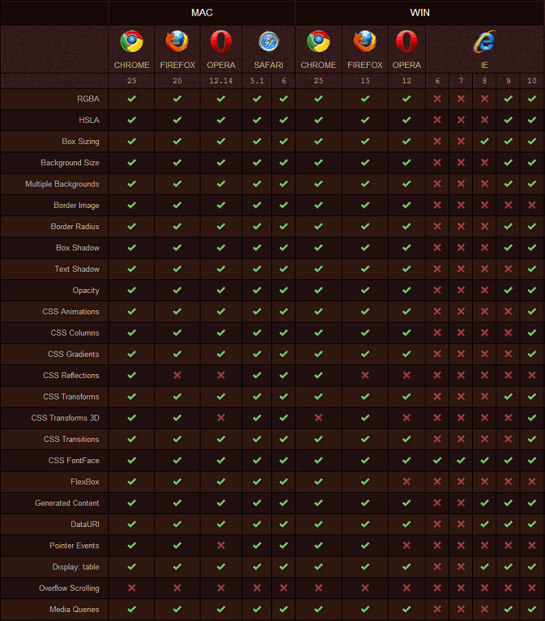
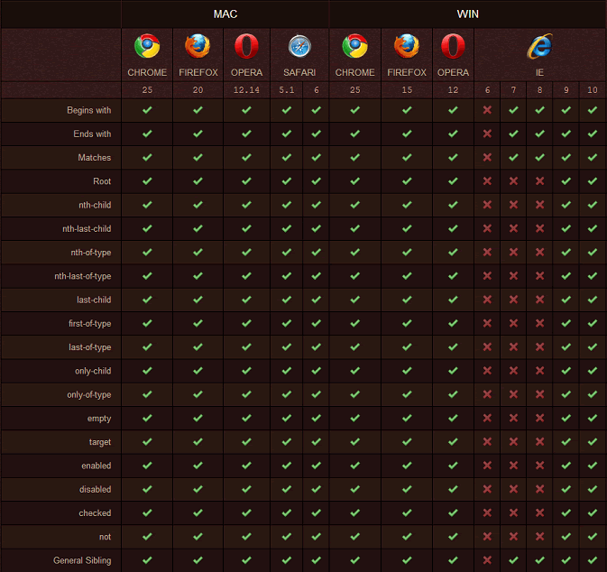
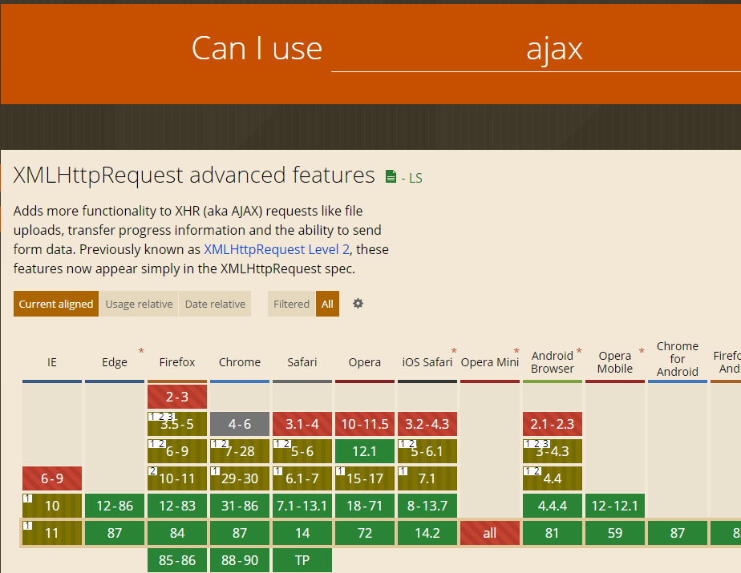
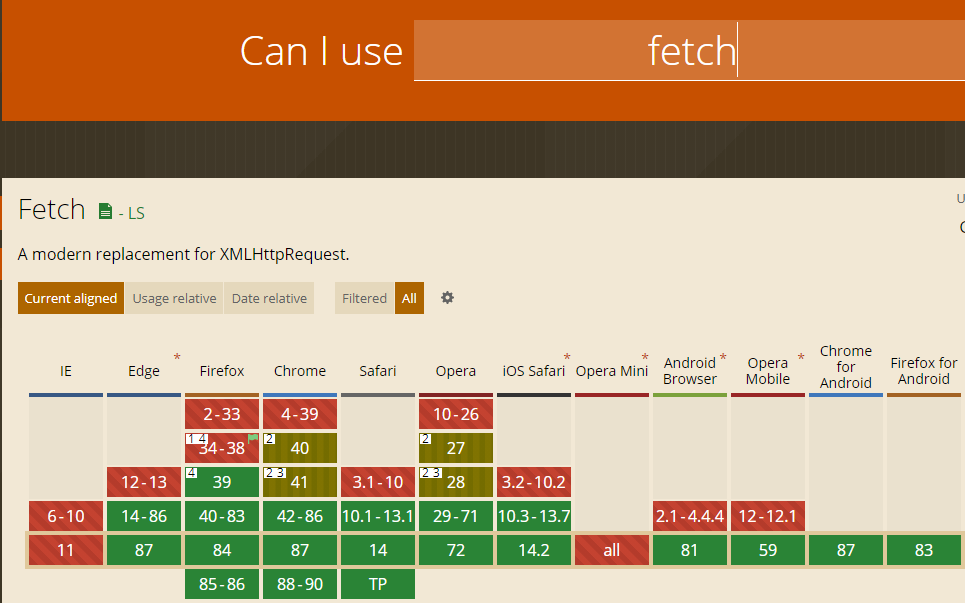

兼容问题
对 IE 浏览器的兼容问题，可以大致分为
- A 级兼容（Chrome、Firefox、IE9+）：要保证在最新浏览器上完美实现设计稿；
- B 级兼容（IE8）：能用且差别不大；
- C 级兼容（IE7 以下）：能用。
处理兼容问题的思路
- 首先以最大程度完善设计稿为基础，再考虑兼容性，不能盲目为了兼容问题而弃用方便简洁的新方法（如 HTML5、CSS3）；当然也不能用过新的技术方法使得兼容性过于低、实用性差。
常用的兼容解决方式
条件注释

<!--[if IE 6]>
<p>You are using Internet Explorer 6.</p>
<![endif]-->
<!--[if !IE]><!-->
<script>alert(1);</script>
<!--<![endif]-->
<!--[if IE 8]>
<link href="ie8only.css" rel="stylesheet">
<![endif]-->
注：IE10 不再支持条件注释
js判断浏览器类型 navigator.userAgent对象
var browser = {
versions: function () {
var u = navigator.userAgent, app = navigator.appVersion;
return { //移动终端浏览器版本信息
trident: u.indexOf('Trident') > -1, //IE内核
presto: u.indexOf('Presto') > -1, //opera内核
webKit: u.indexOf('AppleWebKit') > -1, //苹果、谷歌内核
gecko: u.indexOf('Gecko') > -1 && u.indexOf('KHTML') == -1, //火狐内核
mobile: !!u.match(/AppleWebKit.*Mobile.*/), //是否为移动终端
ios: !!u.match(/\(i[^;]+;( U;)? CPU.+Mac OS X/), //ios终端
android: u.indexOf('Android') > -1 || u.indexOf('Linux') > -1, //android终端或uc浏览器
iPhone: u.indexOf('iPhone') > -1, //是否为iPhone或者QQHD浏览器
iPad: u.indexOf('iPad') > -1, //是否iPad
webApp: u.indexOf('Safari') == -1 //是否web应该程序，没有头部与底部
};
}(),
language: (navigator.browserLanguage || navigator.language).toLowerCase()
}
一 HTML5标签兼容性
解决方法
二 CSS3兼容性
css3 属性兼容列表

css3 选择器兼容列表

默认margin padding 不同
- h1-h6,ol,ul,p,form 等...标签中有默认的margin padding 值
*{margin:0;padding:0;}
仅在ie中生效的css
@media screen and(-ms-high-contrast:active),(-ms-high-contrast:none){
.search-card-list-body{
margin-bottom: 20px;
}
}
CSS Hack
.box {
color: red;
_color: blue; /* IE6 下它生效 */
*color: pink; /* IE67 下它生效 */
color: yellow\9; /* IE/Edge 6-8 下它生效 */
}
链接：更多cssHack方式 参考 CSS hack合集_w3cschool
各主流浏览器私有属性兼容
- Webkit 类型（如 Safari、Chrome）的私有属性是以-webkit-前缀开始。
- Gecko 类型（如 Firefox）的私有属性是以-moz-前缀开始。
- presto 类型（Opera）的私有属性是以-o-前缀开始
- trident 类型 （IE）的私有属性是以-ms-前缀开始
- Konqueror 类型的浏览器的私有属性是以-khtml-前缀开始
解决方式：postcss和autoprefixer
// 安装
npm install postcss
npm install autoprefixer
// 使用
module:{
rules:[
{
test:/\.vue$/,
loader: 'vue-loader',
options:{
vueLoaderConfig,
postcss:[require('autoprefixer')({ browsers: ['last 10 Chrome versions', 'last 5 Firefox versions', 'Safari >= 6', 'ie> 8'] })]
}
},
// 配置
"browserList":[
"> 1%",
"Last 2 versions",
"not ie <= 8",
"iOS >= 8",
"Firefox >= 20",
"Android > 4.4"
]
三 JS 兼容性
1. ES6
桌面浏览前对ES6的支持情况
- Chrome：51 版起便可以支持 97% 的 ES6 新特性。
- Firefox：53 版起便可以支持 97% 的 ES6 新特性。
- Safari：10 版起便可以支持 99% 的 ES6 新特性。
- IE：Edge 15可以支持 96% 的 ES6 新特性。Edge 14 可以支持 93% 的 ES6 新特性。（IE7~11 基本不支持 ES6）

保证es6的兼容性的方式
- 比较通用的工具方案有 babel，traceur，es6-shim 等
解决用例
- 引入browser.min.js ; script标签的type的值设为text/babel。
<!DOCTYPE html>
<html lang="ch">
<head>
<meta charset="UTF-8">
<meta name="viewport" content="width=device-width, initial-scale=1.0">
<meta http-equiv="X-UA-Compatible" content="ie=edge">
<title>Document</title>
</head>
<body>
<script type="text/javascript" src="./babel/browser.min.js"></script>
<script type="text/babel">
const list = ['one','two','three'];
list.forEach( (item,index) => {
alert(item + (index+1));
});
</script>
</body>
</html>
- Polyfill（代码填充） 的技术。
<script type="text/javascript" src="./babel/browser-polyfill.min.js"></script>
- 使用babel编译
// 安装babel
npm install --save-dev @babel/core @babel/cli @babel/preset-env @babel-loader
// .babelrc 文件
presets: "presets": [ "es2015","stage-0"],
/** webpack 配置 **/
// entry 节点
entry: {
app: ['babel-polyfill', './src/main.js']
}
// 配置loader
{
test: /\.js$/,
exclude: /node_modules/,
loader: 'babel-loader'
}
- traceur 使用
<script src="https://google.github.io/traceur-compiler/bin/traceur.js"></script>
<script src="https://google.github.io/traceur-compiler/bin/BrowserSystem.js"></script>
<script src="https://google.github.io/traceur-compiler/src/bootstrap.js"></script>
<script type="module">
import './Greeter.js';
</script>
// 第一个是加载 Traceur 的库文件 ; 第二个和第三个是将这个库文件用于浏览器环境
// type = module 这是Traceur编译器识别ES6代码的标志 自动将里面的代码编译成es5
/*更精确的Traceur配置*/
<script>
// Create the System object
window.System = new traceur.runtime.BrowserTraceurLoader();
// Set some experimental options
var metadata = {
traceurOptions: {
experimental: true,
properTailCalls: true,
symbols: true,
arrayComprehension: true,
asyncFunctions: true,
asyncGenerators: exponentiation,
forOn: true,
generatorComprehension: true
}
};
// Load your module
System.import('./myModule.js', {metadata: metadata}).catch(function(ex) {
console.error('Import failed', ex.stack || ex);
});
</script>
- es6-shim
npm install es6-shim
--------------------
require('es6-shim');
2. PROMISE AJAX FETCH AXIOS
promise 兼容

ajxa 兼容性

IE下 responseType不支持json 会返回undefined
- 添加meta 强制edge
<meta http-equiv="X-UA-Compatible" content="IE=edge">
- json2.js json3.js 序列化返回
fetch 兼容

- isomorphic-fetch 解决
import 'isomorphic-fetch'
- 使用三方库解决
原生支持率并不高，幸运的是，引入下面这些 polyfill 后可以完美支持 IE8+ ：
由于 IE8 是 ES3，需要引入 ES5 的 polyfill: es5-shim, es5-sham
引入 Promise 的 polyfill: es6-promise
引入 fetch 探测库：fetch-detector
引入 fetch 的 polyfill: fetch-ie8
可选：如果你还使用了 jsonp，引入 fetch-jsonp
可选：开启 Babel 的 runtime 模式，现在就使用 async/await
Fetch polyfill 的基本原理是探测是否存在 window.fetch 方法，如果没有则用 XHR 实现。这也是 github/fetch 的做法，但是有些浏览器（Chrome 45）原生支持 Fetch，但响应中有中文时会乱码，老外又不太关心这种问题，所以我自己才封装了 fetch-detector 和 fetch-ie8 只在浏览器稳定支持 Fetch 情况下才使用原生 Fetch。这些库现在 每天有几千万个请求都在使用，绝对靠谱 ！
终于，引用了这一堆 polyfill 后，可以愉快地使用 Fetch 了。但要小心，下面有坑：